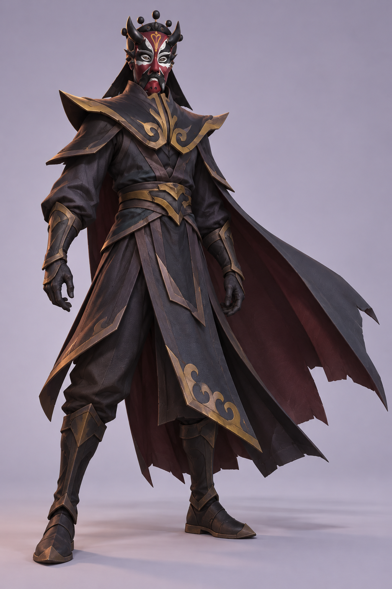

GLOBAL GAME JAM / 3D ACTION RPG
THE TENTH GENERAL
面具之下，
另一种身份。
基于《成龙历险记》黑影兵团面具设定、融合川剧变脸元素的同人动作游戏。
进入这场冒险 ↙00 / THE STORY
你重生了。
昨晚睡前还在看的《成龙历险记》，一觉醒来竟成了现实。更离谱的是，你发现自己成为了黑影兵团的第十位将军——原作中只有九位。
不同于原作中通过面具召唤黑影兵团，你戴上面具后，召唤出的竟然是川剧变脸中的角色。
于是，带着黑影兵团积攒多年的怒气，你决定向成龙一行人发起讨伐……
01 / 核心机制用面具切换身份，
用面具切换身份，
让战斗保持精准与快速。
玩家穿越到《成龙历险记》的世界，成为黑影兵团第十位将军，通过不同面具召唤川剧变脸角色。项目围绕 Game Jam 的 Mask 主题和“精准且快速”副主题建立战斗循环。
02 / 文化转译让川剧变脸进入规则，
让川剧变脸进入规则，
而不只停在视觉符号。
黑影兵团面具与川剧变脸，在“身份随面具改变”这一动作上发生连接。面具不仅决定角色形象，也参与召唤与战斗选择，让传统文化元素真正进入玩家的操作和决策。
03 / 我的贡献在大型团队里，
在大型团队里，
让玩法、手感与 IP 对齐。
我参与玩法规则、战斗手感调试和 IP 内容适配，并建立周进度对齐机制，协同美术与程序控制开发节奏。在 15 人团队中，把策划意图落实到可讨论的规则与可调试的反馈，是我参与制作的重点。
CHARACTER / 角色形象探索面具之下，
角色视觉探索。页面中的动态立绘基于角色原画制作，保留面具、尖肩与披风的细节。此项目为《成龙历险记》IP 同人作品。
面具之下，
是另一种身份。
